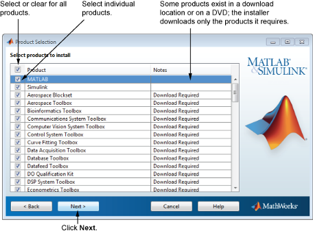

제품 목록에서 설치하거나 다운로드하려는 제품을 지정합니다. 이 목록에는 선택한 라이선스에 연결된 모든 제품 또는 지정한 활성화 키나 파일 설치 키에 연결된 모든 제품이 표시됩니다. 특정 제품을 설치하거나 다운로드하지 않으려면 해당 이름 옆에 있는 확인란 선택을 취소합니다.
참고: 선택한 제품이 컴퓨터의 디폴트 다운로드 폴더나 DVD에 존재하면 MathWorks® 웹 사이트에서 다운로드하는 대신 로컬 파일을 사용하여 설치가 진행됩니다. 제품을 다시 다운로드하려면 폴더 선택 대화 상자로 돌아가서 다른 설치 폴더를 선택합니다. |

원하는 제품을 선택한 후 다음을 클릭하여 계속합니다.